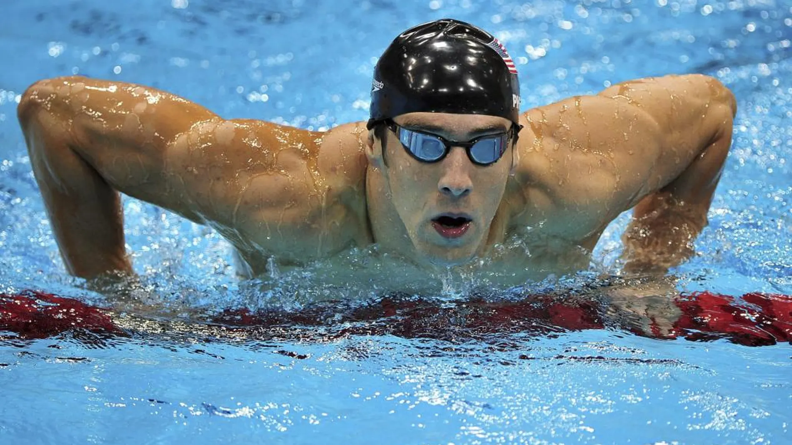

|
Phelps nació y creció en el vecindario Rodgers Forge en Towson, norte de Baltimore.
Michael es el menor de tres hermanos. Su madre, Deborah fue una de la directora de una escuela secundaria. Su padre, Michael Fred Phelps, es un policía retirado del Estado de Maryland quien jugó Fútbol americano en la secundaria y la Universidad, estando a prueba para los Washington Redskins en los setenta.
Sus padres se divorciaron en 1994, su padre contrajo matrimonio nuevamente en el 2000. Phelps se graduó de la Secundaria de Towson en el 2003. Phelps comenzó a nadar a la edad de siete años, influenciado en parte por sus hermanas y la necesidad de controlar su hiperactividad. Estando en sexto grado, fue diagnosticado con Trastorno por déficit de atención con hiperactividad (TDAH). A sus 10 años, obtuvo un récord nacional para los nadadores de su edad, y comenzó a entrenarse en el North Baltimore Acuatic Club bajo las órdenes de Bob Bowman. Phelps continuó rompiendo récords de categorías por edades, su rápida mejora culminó en su clasificación a los Juegos Olímpicos de Sídney 2000 con 15 años, convirtiéndose en el nadador masculino más joven en llegar al equipo olímpico de natación en 68 años. Aunque no ganó una medalla, llegó a la final de los 200 metros mariposa y se posicionó quinto. En los clasificatorios al Campeonato Mundial de Natación de 2001, el 30 de marzo, Phelps rompió el récord mundial de los 200 m mariposa;con 15 años y 9 meses se convirtió en el nadador más joven en poseer un récord del mundo de natación, superando a Ian Thorpe, quien logró el récord de los 400 m libre con 16 años y 10 meses. Ya en el campeonato mundial de Fukuoka, Phelps rompió su propio récord en los 200 m mariposa, convirtiéndose por primera vez en campeón mundial.  Regreso |